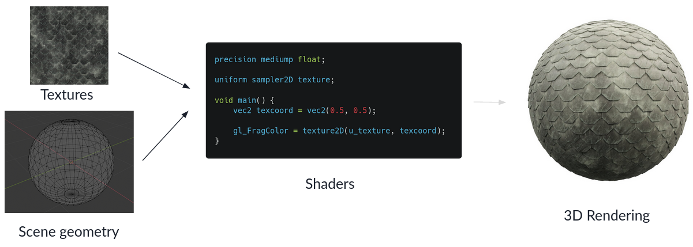
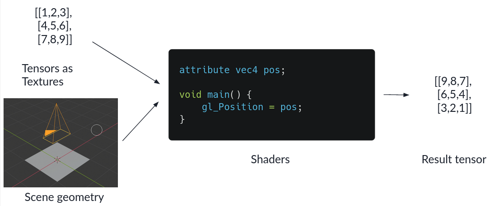

TensorJS - Writing a fast deep learning library for the browser
Posted on Thu 16 September 2021 in Machine learning
When I build Detext, I was looking for deep learning libraries for the browser. The main 2 options where
- Onnx.JS, developed by Microsoft but not actively maintained at the time
- TensorFlow.js, which is pretty mature and well maintained by facebook, but uses its own storage format for trained networks. Converting a trained Pytorch model to this format proved to be very challenging at the time.
So, what do you do when there's no viable inference library for executing your PyTorch/ONNX model? You write your own library of course. The requirements that I had for this library specifically where:
- Fast execution of reasonably sized models on most hardware and browsers. For me, reasonably sized meant a MobileNet on the harware that I had access to - a pretty shitty laptop and a Okish mobile phone.
- A "low level" PyTorch like interface for doing computations with tensors - eg.
being able to do something like
const a = new Tensor([1,2,3,4,5,6], {shape: [2,3]}); const b = new Tensor([1,2,3,4,5,6], {shape: [3,2]}); a.matmul(b);I wanted to have this, so that the pre- and postprocessing that most models typically need could be done as fast as executing the model itself. - A "high level" interface for executing models stored in the ONNX format.
Tensors and how they are layed out in memory
Deep learning frameworks are centered around the concept of a tensor - which to us computer programmers is basically a multidimensional array. Consider a multi dimensional array/tensor like the following one:
[[[1,2,3,4],
[5,6,7,8],
[9,10,11,12]],
[[13,14,15,16],
[17,18,19,20],
[21,22,23,24]]]
This tensor has 3 dimensions, which we call its "rank". The dimensions have a length of
[2,3,4] respectively, which we summarize as the tensors shape. The simplest layout
to store tensors in memory is called the contiguous layout - which basically
just stores the values in the order that you specify them, together with the shape of the tensor.
This layout allows you to have zero-copy reshapes of tensors, but not much else. While there is also the strided layout that allows you to have zero copy transpose and range selection operations, I chose to go with the contiguous layout, since its easy to implement.
Execution backends on the Web
While tensor operations are very straightforward to implement in Javascript, these implementations will not be fast enough to execute any reasonably sized model. Luckily there are other options for fast code execution:
- Webassembly, a binary instruction format that can give you faster runtime than simple Javascript - if optimized sufficiently.
- WebGL, a Javascript API intended for 2D and 3D rendering.
Webassembly
Webassembly (WASM) by now is supported by all major browsers. While you can in principle handwrite Webassembly in the WAT format, I chose to use Rust. Compiling to WASM is pretty well supported and wasm-bindgen even generates the JS boilerplate code for calling into WASM, and corresponding Typescript Type definitions for you. With this writing the WASM backend was way simpler than expected.
WebGL
WebGL was originally intended for 2D and 3D visualizations accelerated by GPUs. So how do you abuse this API to implement fast tensor operations?
The traditional pipeline in WebGL looks a bit like this:

You feed the geometry of the scene and textures to the vertex and fragment shaders. The vertex shader determines the position of all vertices on the screen, while the fragment shader determines the color of each pixel on the screen - typically using the textures.
By setting up a very simple scene geometry of a single rectengular plane that fills up the whole screen, you can use the textures as your input tensors and treat the rendered output as the result tensor.

Doing this allows you to implement many operations by simply writing the correct fragment shader.
There is one detail that I'm going over here - which is the conversion of tensors to textures and back. For this you
- Represent the tensor in the contiguous layout
- Create a texture of fitting height and width. If the tensor has a size that is not conveniently dividable into integer width and height you create a texture that is slightly bigger than needed.
- You fill the tensor data into the texture pixels row by row. Since each pixel consists of 4 floating point values for the red, green, blue and transparent component, you only need 1/4th of the pixels of the size of your tensor.
In the fragment shader you of course also have to do this conversion between tensor indices and texture coordinates.
Considerations for fast speed
TODO: talk about precompiling shaders, keeping all data on GPU
Features of TensorJS
ONNX support
TODO: List of supported operators
Automatic differentiation
TODO: Quickly talk about graph representation
Optimizers and models
TODO: How do optimizers discover model parameters
Sparse tensors
TODO: Short explanation of sparse tensors
Example applications
TODO: Mobilenet inference, style transfer, on device model finetuning